Continuous learning — measuring your way to a plan
A way to plan a media budget that learns what actually works from your own experiments — one small test at a time — and turns that learning into a budget you can defend, with the uncertainty attached. No black-box model of last year's data required.
Most planning starts by fitting a model to history: two years of spend and sales, and a hope that past budgets were “clean” enough to reveal cause and effect. Continuous learning takes the opposite route, and it will feel familiar to anyone who has ever run a lift test. It treats media planning as a sequence of small experiments: run a designed batch of geo tests, read what they measured, decide where the next dollar — and the next test — should go, and repeat. It stops on its own when another round of testing would cost more than it's worth.
Because every test is assigned by design (not just observed after the fact), the answer is causal by construction. And because it is Bayesian, the plan arrives with its confidence built in: a recommended split with a range around it, a clear read on which channels are worth another dollar and how sure we are, and an explicit rule for when to stop testing and act.
What this is, in one line
A lightweight learning loop
(mmm_framework.continuous_learning) that fits a simple curve to how each channel turns spend
into outcome — learned from designed geo experiments — and wraps it in a decision loop that
allocates budget, prices the next experiment, and knows when to quit. It complements, not
replaces, a full marketing-mix model: use this when you have little usable history, and fold its readouts
back into an MMM when you do.
The learning cycle
Each pass through the loop is a wave: a designed batch of geo tests run for a fixed window. The loop carries what it has learned forward — it re-reads all the tests so far each time — so every wave builds on the last rather than starting over.
┌────────────────────────────────────────────────────────────────┐ ▼ │ LEARN the curve ─▶ CHOOSE the next test ─▶ RUN a designed ─▶ │ (how spend → (where would a test wave (geo │ outcome, today) change the plan most?) holdouts) ──▶ UPDATE ▲ │ └────────────────────── STOP? (is another test worth it?) ─────┘
Read the curve
Fit a simple response curve to the tests run so far. The output isn't a single number — it's a range of plausible curves, so you always see how confident the read is.
Price the next test
Score candidate next experiments by how much they would improve the budget decision, and point them where the model is least sure — not just where the average looks best.
Run a designed wave
Assign markets to a test pattern around today's plan and hold them for a few weeks. Designed variation across markets is what makes the readout causal instead of a correlation.
Update, then stop or continue
Fold in the new readout and re-plan. When another wave would cost more than the profit it could unlock, the loop halts and hands you the plan.
Watch it learn
Here is the whole loop in motion, on a four-channel brand whose platforms we'll call Chatter, Pulse, Orbit, and Vibe. It shows the model's beliefs sharpening as each designed wave lands — the profit “map” comes into focus, the uncertainty fades, and the recommendation settles.
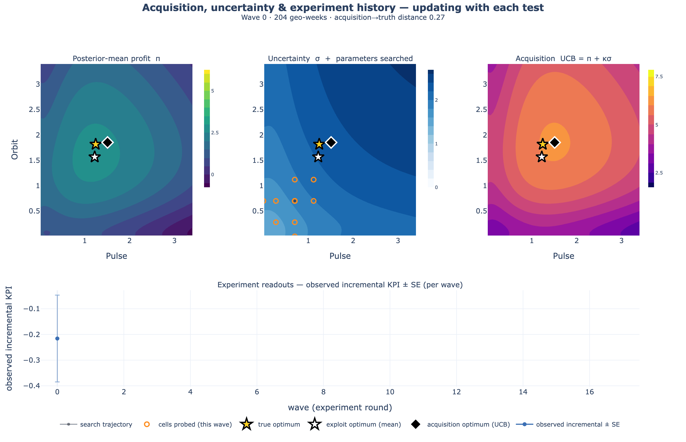
If the animation moves too fast, here is a single frame of what the loop is looking at every time it chooses the next test:
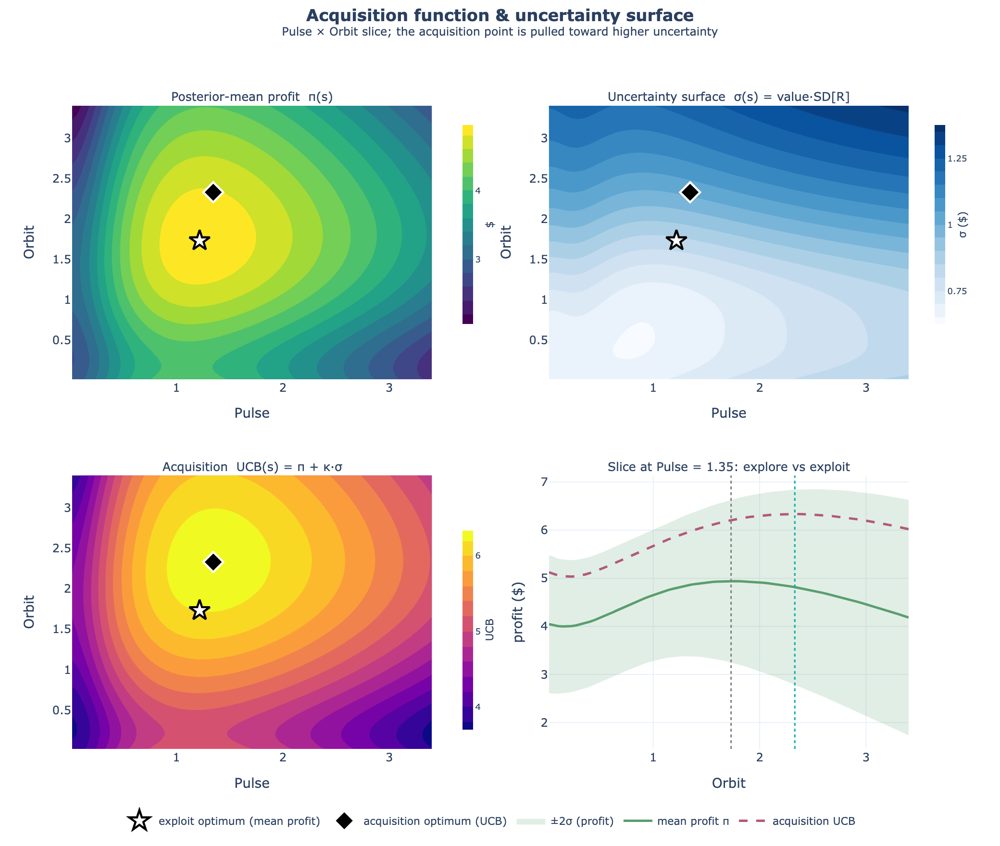
Read it as a story about uncertainty, not just accuracy. The loop is candid about what it doesn't know yet, and it spends its test budget closing the gaps that matter for the decision. The rest of this page follows one brand through a single cycle and shows the actual charts an analyst produces along the way.
A worked example — meet Nomi
Nomi is a direct-to-consumer beverage brand spending $560k a week on paid social, split evenly out of habit — $140k each across Chatter, Pulse, Orbit, and Vibe. Growth has plateaued, the CFO wants the budget defended, and the last three attempts to read ROI off the historical dashboard all disagreed. Nomi's analyst runs one measurement cycle to answer six questions:
The questions on the table
- Are we over- or under-investing in any channel?
- Which channels actually drive incremental sales?
- Do the channels fight each other, or help each other?
- What should next quarter's split be — and how sure are we?
- Is it worth running another test, or do we lock the plan?
- When will this answer go stale?
Why last year's dashboard lied
Before spending a dollar on testing, the analyst re-makes the case for why testing is necessary. She plots two years of weekly spend against sales. The correlation is gorgeous — and useless.
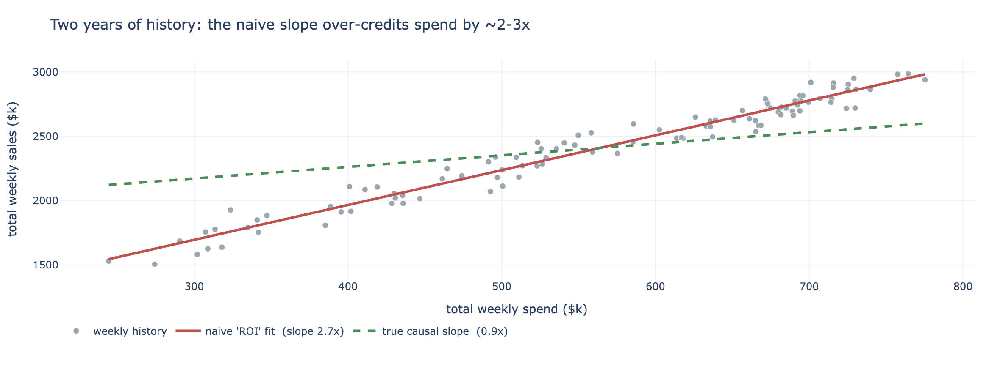
What the test reveals
So the analyst runs one budget-neutral geo wave: across a rotation of markets, each platform's spend is nudged up in some, down in others, and switched off in a few — total national spend unchanged. Three weeks later, the readouts land. Three charts answer the first three questions.
Which channels actually work?
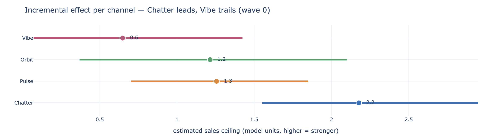
Is the next dollar worth it?
Strength isn't the same as “worth funding.” The funding line asks a sharper question: at today's spend, does the next dollar into each channel still pay for itself? A channel clears the line when its return on the next dollar is above break-even — and we report the probability it clears, so a channel that's “70% likely worth it” is treated differently from one at 100%.
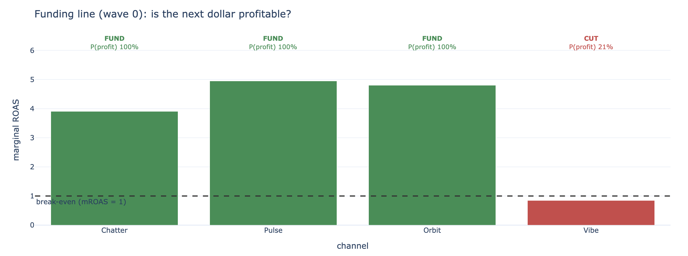
One twist worth flagging, because an analyst will spot it: at today's spend Pulse shows the highest return on the next dollar — yet the final plan holds it roughly flat rather than piling in. That's not a contradiction; it's the synergy map earning its keep. Pulse overlaps Chatter's audience, so every extra Pulse dollar eats into Chatter, the bigger engine. The budget does more total work pushed into Chatter and Orbit, which have real headroom and cleaner, less-overlapping reach.
Do the channels help — or fight — each other?
Before cutting anything, one more question the dashboard could never answer: when two platforms run together, do they amplify each other (a halo) or cannibalize (chase the same people twice)? The synergy map reads like a correlation grid, but it's causal.
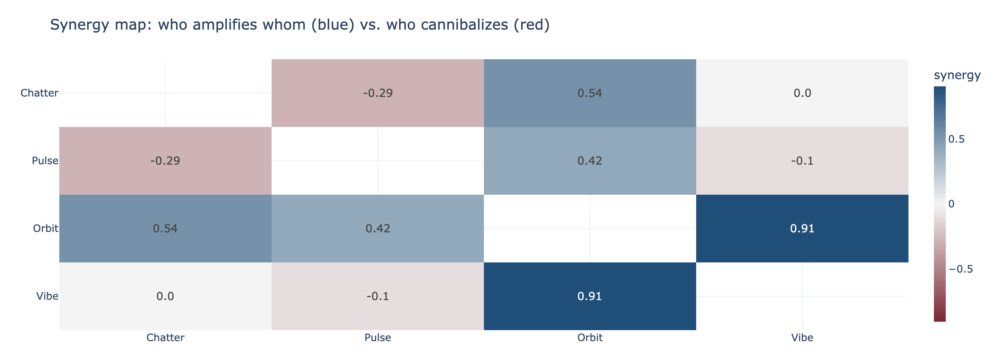
The recommendation — and how sure we are
Now the money question. The planner reads the best split off the response curves — but as a range, not a single number, because “move $100k” lands very differently when the margin of error is $10k versus $60k. The analyst shows the client the move and its confidence. (This is the plan once it has settled across a couple of confirming waves — the next section shows how the loop knew it had tested enough.)
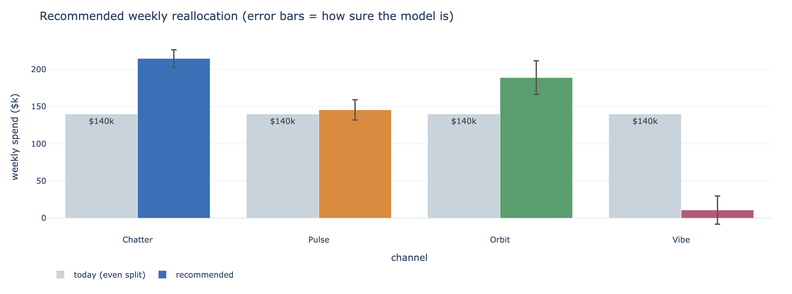
💡 A plan is a decision under uncertainty, not a forecast
The deliverable is not a single ROI number for Chatter. It is “shift budget toward Chatter and Orbit; both clear break-even with high probability; Vibe does not; and here is how confident we are in each move.” The uncertainty is the product, not a caveat on it.
Knowing when to stop
Testing isn't free — every wave rearranges real budget and costs time. The loop makes the call explicitly, turning “should we test more?” from a gut feel into arithmetic. It tracks how much profit is still at risk from what we don't yet know, and compares the value of resolving that against the cost of another wave.
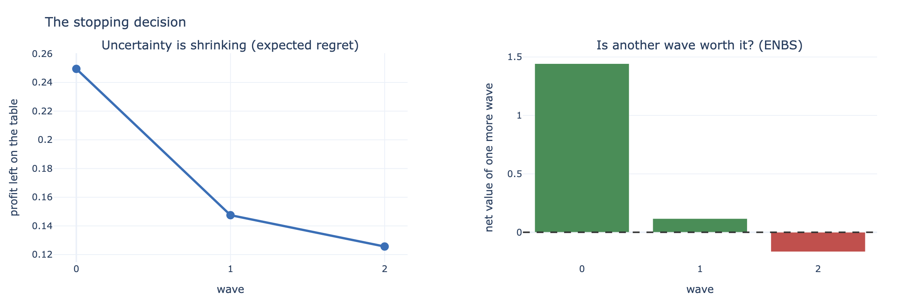
When to run it again
A measured plan is a snapshot, not a law. Audiences drift, competitors move, creative fatigues — so the loop treats every finding as having a shelf life and puts the next test on the calendar before the answer goes stale.
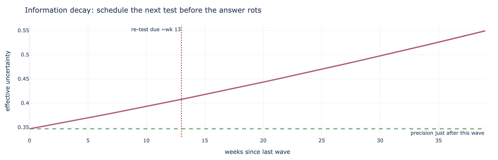
The one-slide for the media team
Everything above collapses into a single decision table — the thing that actually goes in the deck. Per channel: today's spend, the recommended spend, the change, a verdict, and how confident we are.
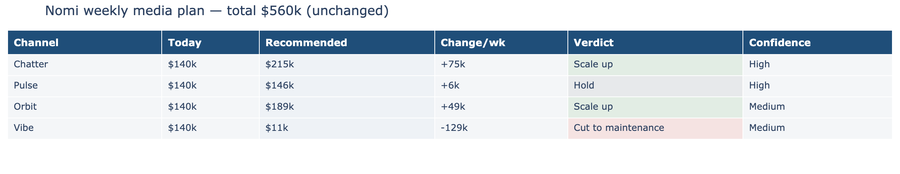
What you can — and can't — claim
✅ It's causal, by design — the lifts come from variation you created, not correlations you didn't control. ✅ The direction is solid — the ranking (Chatter/Orbit up, Vibe down) and the strongest synergies (Orbit's halo, the Chatter–Pulse overlap) are stable. ⚠️ Trust the ranking more than the decimals — a specific channel's exact return multiple is a modeled estimate; quote the decision, not a press-release ROI. 🔁 It has a shelf life — re-test on the clock above, or sooner if the market jumps.
A harder problem
Nomi's world converged quickly. Real media rarely does. Here's the same loop on a deliberately harder brand: two channels that strongly cannibalize each other — heavily overlapping audiences — so there's no single best answer, just a narrow trade-off you have to feel your way along.
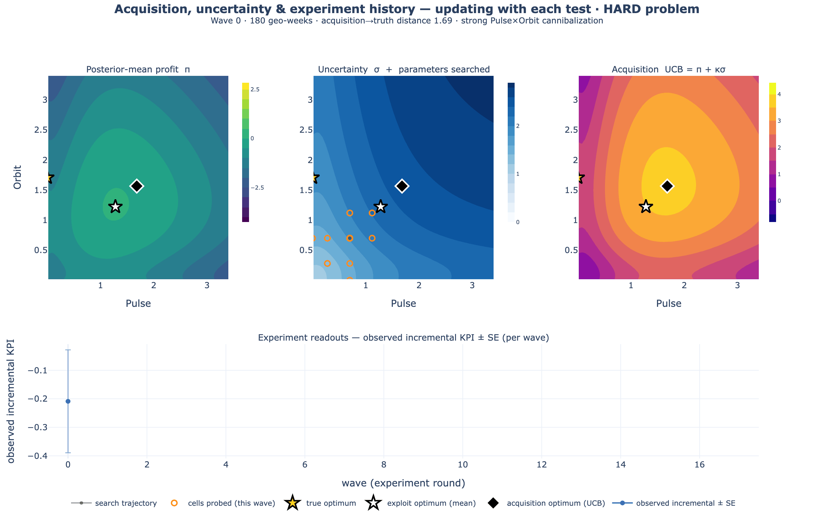
This is the honest picture of measurement under uncertainty. Learning is not a smooth march to a known answer; it's a sequence of noisy readouts that gradually rule out the wrong bets. The loop's job is to keep each test cheap and pointed at what still matters, and to be candid about how much is still unknown.
When the curve is wrong
The loop fits a saturation curve to every channel. So here is the question a sharp analyst should ask before trusting any of the charts above: what if the real world doesn't follow our curve? Some channels genuinely ramp twice — an early burst from cheap retargeting inventory, then a second, slower climb as prospecting kicks in. A single smooth curve can only average over a two-phase response like that. We tested exactly this failure: simulate a brand whose true response ramps twice, then fit it with deliberately wrong curve families and grade the damage against the known answer.
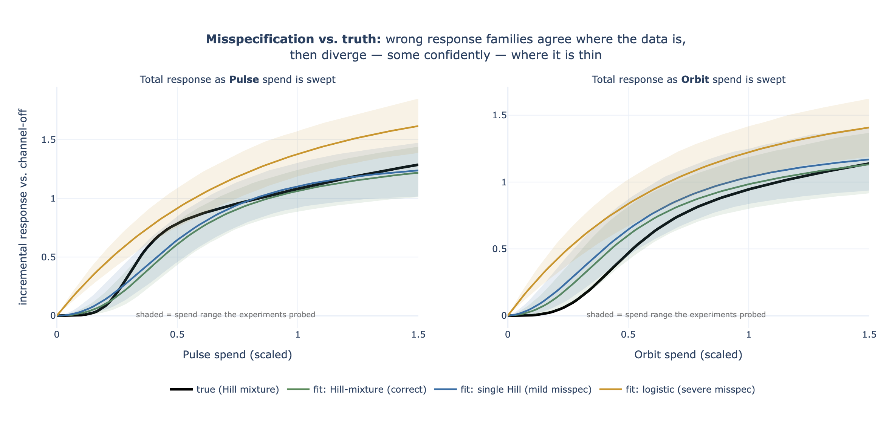
The study's verdict separates two things that usually get conflated
(numbers from the single-cycle study; the section “When the response family is wrong” in
technical-docs/continuous-learning.md records them):
- The decision barely notices. The recommended split captured ~99% of the true optimum's profit under every family — a profit gap of 0.9% with the wrong single-phase Hill, 1.4% with the logistic, 0.9% with the correct two-phase mixture. Near the best split the profit surface is nearly flat, and any smooth saturating curve fit to the tested cells gets the local ranking of next dollars right — which is all the allocator uses.
- The confidence intervals lie. The per-channel “return on the next dollar” interval covered the true value on 4 of 4 channels for the correct family (which was also honest enough to be the widest), 3 of 4 for the single Hill — and only 2 of 4 for the logistic, whose intervals were also the narrowest. A wrong model doesn't know it's wrong, so it gets tighter exactly where it shouldn't.
- The sampler complains first. Forcing a single curve onto two-phase data often shows up as a fit that won't converge (R̂ ≈ 1.5 in the study) — there is no one curve that reconciles all the test cells. Treat a convergence warning as a misspecification alarm, not a nuisance: it's the cue to switch to a more flexible curve, never to trust the tight intervals.
- The loop forgives. Run the full wave-by-wave loop under the mild misspecification and the damage washes out: the wrong family's profit gap fell 0.9% → 0.5% → 0.2% → 0.3% across waves, tracking the correctly-specified loop's 0.9% → 0.5% → 0.1% → 0.1% to a fraction of a percent. Because each wave re-tests locally and refits on everything, the loop never leans on the far extrapolation where the wrong curve is worst.
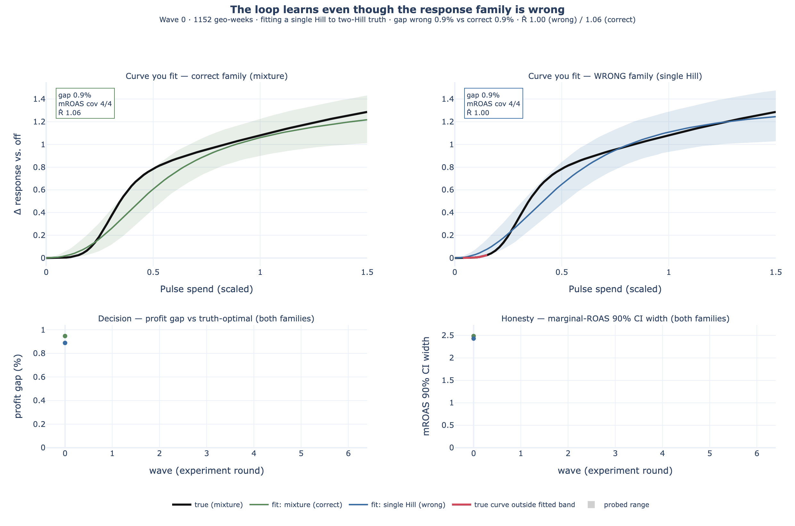
When you'd rather not pick a curve at all
The last section's dilemma — pick a curve family and risk being confidently wrong — has a
third answer: don't pick one. Setting activation="monotone_spline" swaps the
named curve for a monotone spline: a flexible curve assembled from nine S-shaped building
blocks, each rising from zero to full height a little later than the last, with the fit learning how much
weight each block deserves. Any mix of positive weights produces a curve that only ever rises and
eventually levels off — which is everything the loop assumed in the first place, and nothing more.
Weight the early blocks and you get a channel that saturates fast; weight the late ones, a slow burner;
weight both ends and you get exactly the two-phase ramp that broke the named families above. No family is
chosen, so no family can be wrong.
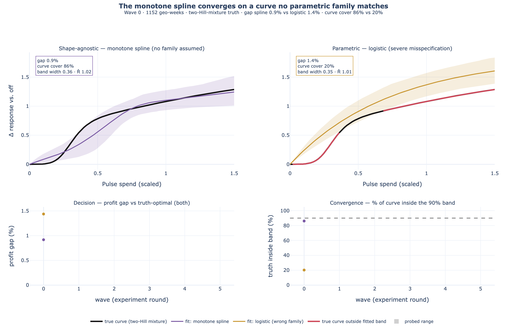
Flexibility has one honest cost, and it is worth naming because we hit it while building this: the spline can only bend where its building blocks let it. With too few blocks there is a small gap between the best curve the spline can make and the truth. Early on that gap hides inside the wide uncertainty band — but as waves accumulate and the band tightens past it, coverage quietly decays: an earlier six-block version of this exact run slid from 82% to 62% coverage by wave six. The shipped nine-block basis keeps that gap smaller than the band ever gets, which is why the coverage above holds. The working rule, recorded in the technical spec: if the uncertainty band gets as tight as the family's best-approximation gap, add blocks.
And because every part of the loop reads whatever curve the fit carries through one shared interface, the full two-dimensional machinery from the harder-problem animation runs unchanged. Below, both pictured channels genuinely ramp twice — each one's true response is a weighted sum of two curves — and the loop fits the monotone spline, never told what it is looking at:
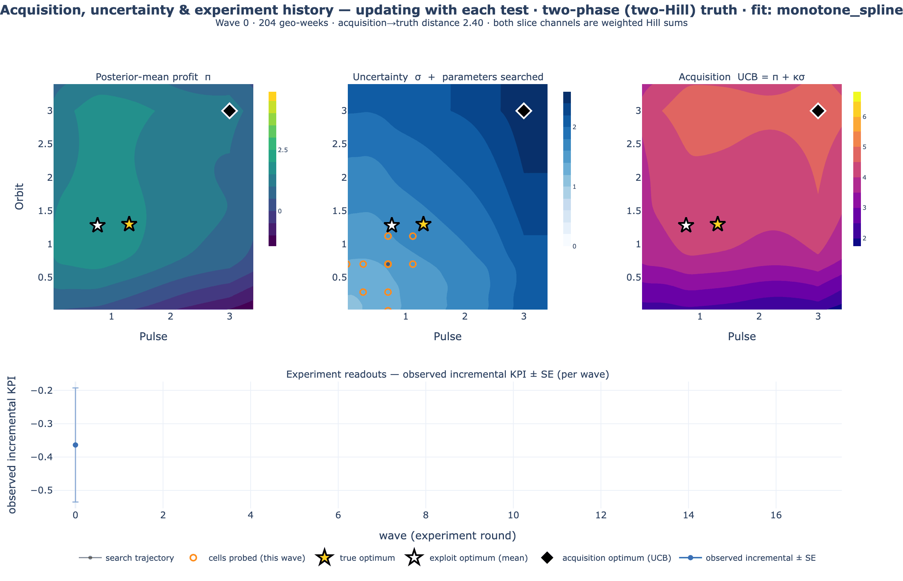
Why plan this way
Because the numbers a plan rests on are rarely known, and pretending otherwise is where budgets go to waste.
It defuses demand-chasing
Channels that ride demand look fantastic in a dashboard that can't separate cause from confound. Designed experiments break that directly, so the loop credits incremental effect, not coincidence.
It turns a big bet into small ones
Instead of committing a full budget on one fitted curve, you commit a little, in a designed test, and let each readout de-risk the next move. The plan walks toward the optimum as evidence accrues.
It reports what it doesn't know
The recommendation is a range, and every channel gets a probability of clearing break-even. Act on the confident channels; keep testing the uncertain ones — rather than treating every estimate as fact.
It decides when to stop
The stop rule converts “should we test more?” into arithmetic: keep testing while the profit at risk outweighs a wave's cost; otherwise allocate. No infinite testing, no chasing noise.
In practice this fits marketing organizations that already run geo experiments — dark markets, matched-market lift tests, holdouts — and want a principled way to sequence them toward a budget rather than running one-off tests and eyeballing the results.
What it assumes
Every measurement method rests on assumptions; honesty means stating them in plain terms.
- You can assign the tests. Markets have to be assigned to test patterns (randomly, or balanced on their pre-test levels). Without designed variation the causal claim collapses.
- A clean starting line. A short pre-period where every market spends normally pins each one's baseline, so a market's own trend isn't mistaken for a media effect.
- Markets don't bleed into each other. A test market shouldn't contaminate a control market; overlapping media footprints must be handled in the assignment.
- The world holds still, briefly. The response is assumed stable over the few weeks being compared; a channel whose effectiveness lurches mid-flight breaks the read.
- Channels you can't randomize stay honest. A walled-garden platform that can't be geo-tested is reported on its own strength only, with any synergies flagged as assumed, not measured.
⚠️ Sign-reliable, magnitude-assumed
The direction of effects and synergies, and the ordering of the strong channels, recover robustly. The exact magnitudes of lightly-tested interactions lean on their priors. Never present a lightly-tested synergy number as a hard measurement — the loop's own audit exists to catch exactly this.
Carry-over and noise — two practical helpers
Two real-world wrinkles the loop handles rather than assumes away:
Yesterday's spend still works today. Media carries over — a burst of Chatter spend keeps
nudging sales for a week or two after it stops, so a market's sales this week partly reflect last
week's budget. An adstock pre-pass (adstock_prepass in
continuous_learning.preprocess) converts each market's raw spend history into
“effective exposure” before the fit, using the same carry-over convention as the full
marketing-mix model. In a steady flight this is nearly a no-op — the designed test cells hold each market's
level constant, so carry-over settles — but on a short test window it matters: in the simulated
check it roughly halved the error in the channel-strength reads.
Use last year's baseline to cancel noise. Markets differ enormously in base demand, and
that spread is noise for the experiment. But each market's own pre-test level predicts its test-period
level well — so subtract the predictable part (cuped_adjust, the standard CUPED adjustment from
large-scale A/B testing). If the pre-period correlates with the test period at \( \rho \), the noise variance
falls by \( 1-\rho^2 \): at \( \rho = 0.8 \), 64% of the noise is cancelled before the model sees the data —
the same read from roughly a third of the geo-weeks, for free.
Start from the tests you've already run
Most teams don't start from zero. There is a drawer of finished lift tests — a Chatter holdout from Q3, a Pulse scale-up from last spring — each concluded, read out, and then filed. The loop can take those directly as its starting evidence: each finished test becomes one measured fact about the response surface — at this spend level, this channel produced this much lift, plus or minus this much. The lift keeps its sign: a scale-up that grew sales enters positive, and a holdout enters negative — spend went down and sales followed, which is exactly the evidence that the spend was working. No geo panel, no re-analysis, no model of history required.
Two properties make this work. First, no pre-period is needed: a lift readout is already a difference — test minus control — so each market's baseline has cancelled out of the number before it reaches the loop. The only assumption you carry is the one every re-used test result carries anyway: the channel's response hasn't structurally changed since the test ran. Second, the readouts slot in as constraints, not gospel — a test with a wide standard error tugs the curve gently; a precise one anchors it.
💡 What a few old tests can — and can't — tell you
A handful of past tests gives a solid funded / not-funded read at the spend levels you actually tested. What they cannot give is the shape of the curve: only tests at several distinct spend levels reveal where saturation bites, so with sparse history the curvature stays a prior-informed guess and the program's status readout says so (“shape identified: no”) rather than pretending. Designed waves fill that in later.
In the workspace this is one step: import_past_experiments pulls your completed and
calibrated experiments from the registry, converts each readout into a surface constraint, refits, and
reports what it imported — and what it skipped, with reasons (a marginal-ROAS readout, for example, is a
slope rather than a lift, so it is skipped rather than mangled). In code:
import mmm_framework.continuous_learning as cl
summaries = [
# One finished lift test = one constraint on the surface:
# "at this spend vs that spend, we measured this total lift, +/- this SE."
{"spend_test": [0.9, 0.7], "spend_base": [0.7, 0.7],
"lift": 4200.0, "se": 900.0, "scale": 240.0}, # 24 geos x 10 weeks
# A holdout keeps its sign: spend down, measured lift NEGATIVE.
{"spend_test": [0.7, 0.0], "spend_base": [0.7, 0.7],
"lift": -2600.0, "se": 700.0, "scale": 160.0}, # 16 geos x 10 weeks, Pulse dark
]
post = cl.fit({"summaries": summaries}, channels=["Chatter", "Pulse"])Creative and keyword arms
Often the live question isn't which channel — it's which creative family inside Chatter, or brand versus non-brand keywords inside search. The loop handles this by splitting a channel into arms: “Search │ Brand” and “Search │ Non-brand” become two entries on the same surface, each with its own curve, while the parent's total budget stays fixed — the optimizer re-mixes inside Search without changing what Search spends overall.
Arms come with an honest default: siblings cannibalize. Two creatives in the same channel chase the same audience, and two keyword groups harvest the same queries — so within-parent pairs start with a “competes” prior, and the data has to earn anything friendlier. It's the same machinery that keeps a walled-garden channel honest: pairs you can't (or don't) test are constrained by an assumption that is stated, not silently estimated.
The economics are the real constraint. Each extra arm adds about three test cells per wave (a nudge up, a nudge down, and a shut-off) plus two more for every sibling pair you probe (a joint nudge-up and a joint nudge-down) — and every cell needs at least one market. So split one or two parents at a time, where the mix question is actually worth money, rather than atomising the whole plan into arms the market count can't support.
In the app
In the platform the loop is a learning program: a named, long-running measurement object
your project carries across quarters, with every wave and readout on the record. The
Sextant page (/learning) is its home — per program you get the wave timeline,
the funding line with per-channel FUND / HOLD / CUT verdicts, the synergy map, response curves with their
uncertainty bands, and the stop-or-continue call with the economics behind it. Designs are shown in dollars
per market per period — the engine works on market-week rows, so every dollar figure it takes or
gives is a per-market spend level, not a national total — and results are ingested as a simple market-week
table.
start_learning_program
Name the channels (and any creative/keyword arms), the budget and current split — in dollars per market per period — the value of a unit of outcome, and what a wave costs. The program starts from stated priors — and anything you import.
import_past_experiments
Turn completed and calibrated lift tests from the experiment registry into surface evidence — with a per-test imported/skipped report, and reasons for every skip.
design_learning_wave
The next designed wave as concrete cells in dollars — which markets nudge which channels up, down, or off — sized to what your market count supports.
record_learning_wave
Ingest the wave's market-week results (CSV or rows), refit on everything so far, and re-plan — the readouts update in place.
get_learning_program_status
The current state of belief: recommended split with its range, the funding line, the synergy read, diagnostics, and any honesty flags (e.g. “shape not yet identified”).
check_learning_stopping
Re-run the stop rule under your economics — margin, horizon, wave cost. It recommends stop-or-continue and only closes the program when you confirm.
The same six steps are available conversationally in the agent workspace and as REST endpoints for automation; agent, page, and API all read from the same program record, so there is one version of the truth per program.
Under the hood (if you're curious)
You don't need any of this to read the charts above, but here's the one idea that makes it all work. For each channel, the loop fits a saturation curve — spend buys outcome, with diminishing returns as you pour more in — plus a small term for how each pair of channels interacts. It fits that curve to the designed tests, keeps a whole range of plausible curves (that's the uncertainty you see everywhere), and the budget optimizer simply walks uphill on them. The “when to test” and “when to stop” questions are answered by asking, in dollars, whether the next test would change what you'd actually do.
Want the real math?
The full, precise treatment — the information-gain objective, the fast acquisition calculation, and the stopping rule, each grounded in the Bayesian experimental-design literature and mapped to the code — lives in the mathematical foundations companion. This page is the view from the analyst's desk; that one is the view from under the hood.
Play with the surface
This is the exact arithmetic under every chart above, live: two channels, one synergy term, one fixed budget. Drag the sliders and watch two things — how each channel's curve responds, and where the best split of the budget lands. The formula is the one the engine fits (\( f(s) = s^{\alpha} / (s^{\alpha} + \kappa^{\alpha}) \), response \( R = \beta_1 f_1 + \beta_2 f_2 + \gamma f_1 f_2 \)) — mirrored here in page JavaScript.
Computed live in your browser — the same math as surface.py.
Left: each channel's response, solo (solid) and with its partner at your current split (dashed) — the
shading between them is the synergy's lift (or, with \( \gamma < 0 \), the cannibalisation drag).
Right: total profit versus the split, with the best split starred, your split marked, and the splits
where a channel's next dollar stops paying for itself shaded. Push \( \gamma \) negative and
watch the profit curve flatten into a ridge — the “harder problem” from the animation above.
Budget and value are fixed (in the engine's scaled units) so the sliders isolate the curve itself.
Should we run another wave?
The stop rule is arithmetic you can do on a napkin — so here is the napkin. Four numbers: how much profit is still at risk from what you don't know (the expected regret, in outcome units per week), what a unit of outcome is worth, how long the improved plan would run, and what a test wave costs. Testing pays while the value of resolving the uncertainty exceeds the cost of the wave.
The rule the loop runs (enbs / should_stop): keep testing while
E[regret] × margin × horizon − wave cost > 0 — the expected net benefit of
sampling. The engine's “population” factor plays the horizon's role here: it counts the
geo-periods — markets × horizon periods — the sharper plan will apply to (the calculator's
E[regret] is already summed across markets, so only the horizon remains). Note what the rule does not ask — whether the
estimates are “precise enough.” It asks whether precision is still worth buying.
Try it
The whole loop is a small Python API. One designed wave, a fit, and the three decision readouts you saw above — the recommendation, the funding line, and the profit still on the table:
import numpy as np
import mmm_framework.continuous_learning as cl
# A synthetic brand with a known answer (swap for your own geo panel).
world = cl.make_world(seed=0)
center = np.full(4, 0.7) # current split (scaled units)
# Run one designed wave, then fit the response curves.
data = cl.simulate_panel(world, center, n_geo=80, t_pre=6, t_test=10, noise=0.5)
post = cl.fit(data, channels=world.channels, pair_signs=cl.PAIR_SIGNS_EXAMPLE)
# Plan under uncertainty: recommendation, funding line, value still on the table.
rec = cl.recommend_allocation(post, B=3.2, value=5.0, mode="fixed")
mroas_mean, prob_above_line, _ = cl.marginal_roas(post, rec, value=5.0)
expected_regret, *_ = cl.expected_regret(post, B=3.2, value=5.0, mode="fixed")Or drive the full sequential loop end-to-end — carrying learning across waves, with the stop rule — and read back the per-wave decision trace:
import mmm_framework.continuous_learning as cl
world = cl.make_world(seed=0)
trace = cl.run_closed_loop(
world, center=[0.7, 0.7, 0.7, 0.7], B=3.2, value=5.0, # B = budget; value = $ profit per unit outcome
margin=1.0, population=2.0, wave_cost=0.45, max_waves=4, # wave_cost = what a test costs, in the same units
)
for wave in trace["history"]:
print(wave["wave"], wave["e_regret"], wave["enbs"], wave["stop"])Where to go next
The two executed notebooks are the evidence behind this page:
nbs/continuous_learning_story.ipynb — the Nomi
measurement story, end to end — and
nbs/continuous_learning.ipynb — the engine's
recovery, acquisition, stopping, and misspecification walkthrough. The precise
methodology is in the mathematical foundations. And the
model-anchored counterpart — prioritizing experiments from a fitted model — is the
calibration loop. Use the model-free loop when you have little
usable history; fold experiment readouts back into an MMM when you do.